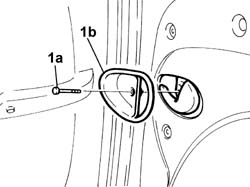

7020D68 lock return device panel for sliding side door, l.h. or r.h. - r r
- Path
- Procedures > 70 FITTINGS > 7020 LOAD CARRYING COMPARTMENT DOORS > 7020D sliding door closure devices > 7020D68 lock return device panel for sliding side door, l.h. or r.h. - r r
- Kind
- repair procedure (removal / refitting; the operation number is the code)
- Applies to
- all engines; all production periods
- Interactive page
- https://sloeber94.github.io/elrnDB-fDbl/en/#/2585073
Applies to: all engines; all production periods
 Removing
Removing
 Refitting
Refitting1. Undo the bolt (1a) and remove the embellishment (1b).

Applies to: all engines; all production periods
Refitting
RemovingFit the embellishment in its seating and secure it with its bolt.